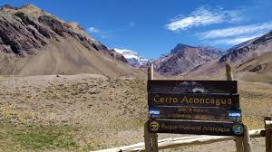

Bienvenidos a Un paseo por Mendoza
Visite los mejores lugares de nuestra provincia! al mejor precio con los mejores guías de turismo! Recorra nuestras bodegas, montañas, lagos, parques.
Enamórese de Mendoza!!!
